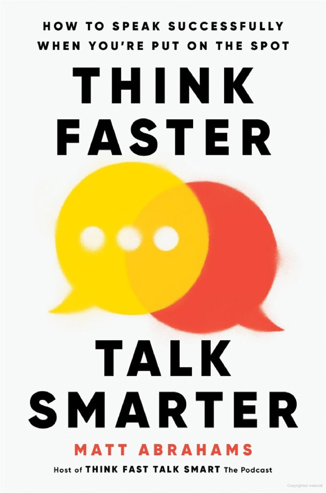
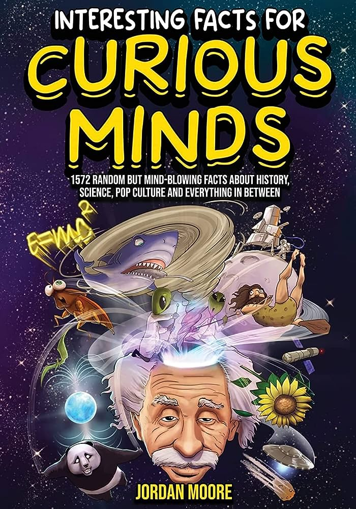
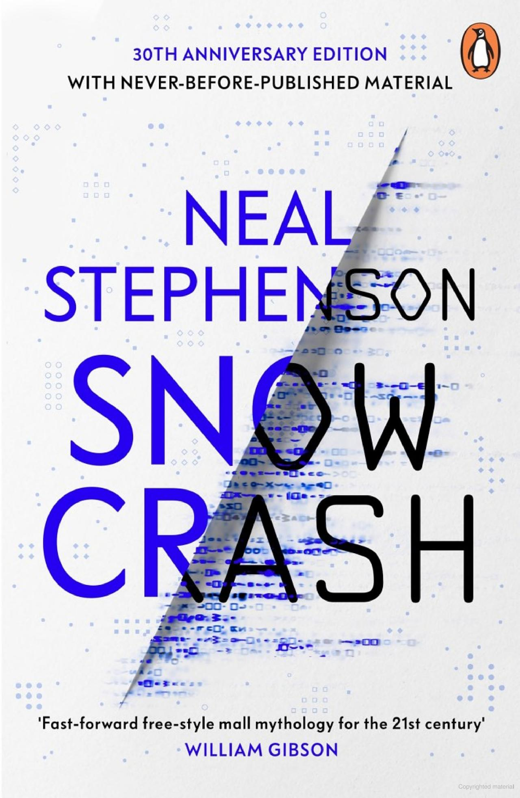
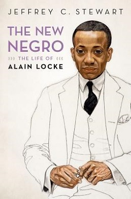

Think Faster, Talk Smarter
Matt Abrahams
Atomic Habits
James Clear

Interesting Facts
Jordan Moore

Elon Musk
Walter Isaacson
The War That Will End War
H.G. Wells
Dare to be a Champion
Lee Chong Wei

The Name of the Wind
Patrick Rothfuss
An Army at Dawn
Rick Atkinson

Snow Crash
Neal Stephenson
Anxious People
Fredrik Backman

Steve Jobs
Walter Isaacson
Ninth House
Leigh Bardugo
Einstein: His Life and Universe
Walter Isaacson
Catherine the Great: Portrait of a Woman
Robert K. Massie

The New Negro: The Life of Alain Locke
Jeffrey C. Stewart
I Know Why the Caged Bird Sings
Maya Angelou
Genghis Khan and the Making of the Modern World
Jack Weatherford
1491: New Revelations of the Americas Before Columbus
Charles C. Mann
Team of Rivals: The Political Genius of Abraham Lincoln
Doris Kearns Goodwin

Behold, America: A History of America First and the American Dream
Sarah Churchwell
| Title | Genre | Year | Type |
| Think Faster, Talk Smarter | Self Help | 2023 | eBook |
| Atomic Habits | Self Help | 2018 | Paperback |
| Interesting Facts | Others | 2022 | Paperback |
| Elon Musk | Biography | 2023 | eBook |
| The war that will end war | History | 1914 | Hardcover |
| Dare to be a Champion | Biography | 2012 | Paperback |
| The Name of the Wind | Biography | 2007 | Hardcover |
| An Army at Dawn | History | 2022 | Audio |
| Snow Crash | Fiction | 1992 | Hardcover |
| Anxious People | Humor | 2019 | Paperback |
| Steve Jobs | Biography | 2011 | Paperback |
| Einstein: His Life and Universe | Biography | 2007 | Paperback |
| Catherine the Great: Portrait of a Woman | Biography | 2011 | Paperback |
| The New Negro: The Life of Alain Locke | Biography | 2017 | Paperback |
| I Know Why the Caged Bird Sings | Biography | 1969 | Hardcover |
| Genghis Khan and the Making of the Modern World | Biography | 2004 | Paperback |
| 1491: New Revelations of the Americas Before Columbus | Others | 2004 | Paperback |
| Team of Rivals: The Political Genius of Abraham Lincoln | History | 2005 | Paperback |
| Behold, America: A History of America First and the American Dream | History | 2018 | Paperback |
| Ninth House | Others | 2019 | Audio |